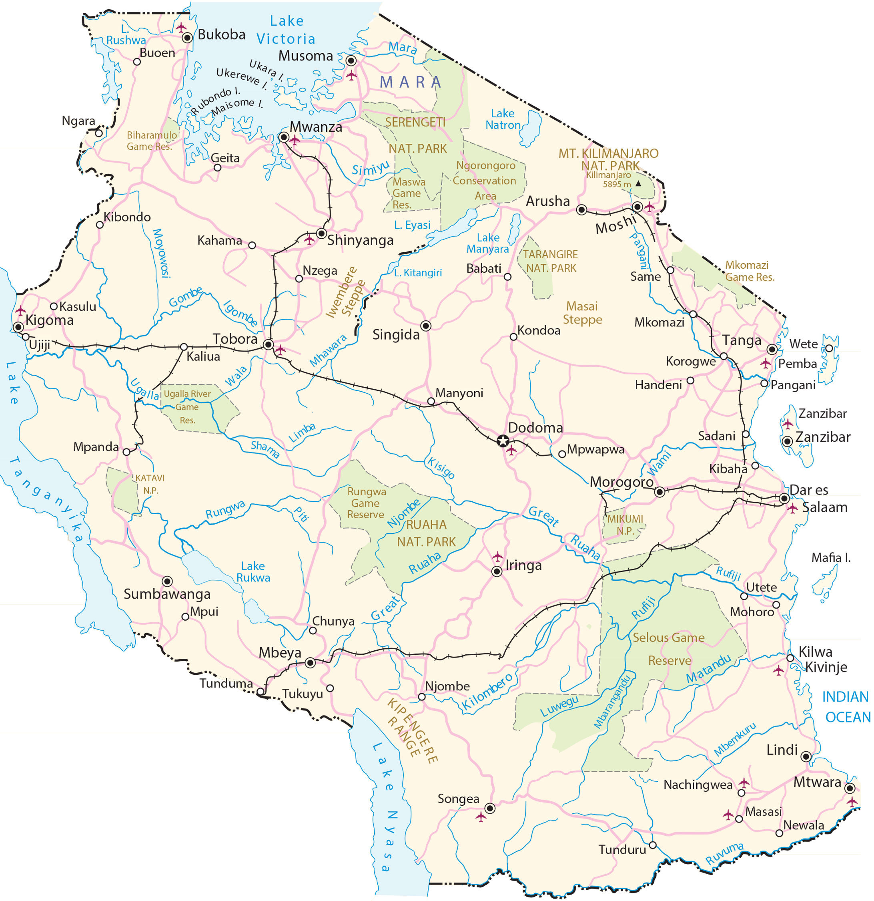

Tanzania is located in eastern Africa, along the Indian Ocean. The country is filled with memorable sites like Mount Kilimanjaro, the source of the Nile, the Serengeti, and Africa’s largest lake, Lake Victoria. Also, it’s known for its wilderness, safaris, and Big Five game animals including the elephant, lion, leopard, buffalo, and rhino. It borders 8 African countries including Uganda, Kenya, Rwanda, Burundi, the Democratic Republic of Congo, Zambia, Malawi, and Mozambique.
The capital city is Dodoma, although the largest city and commercial hub is Dar es Salaam. Other major cities are Mwanza, Zanzibar, and Arusha. The geography of Tanzania is varied, with a central plateau and is bordered by mountains, including the Usambara and Uluguru ranges.
Go back home